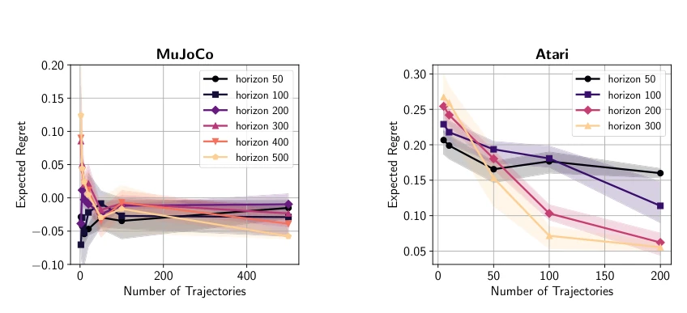
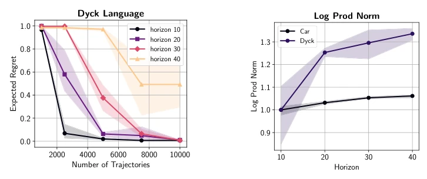
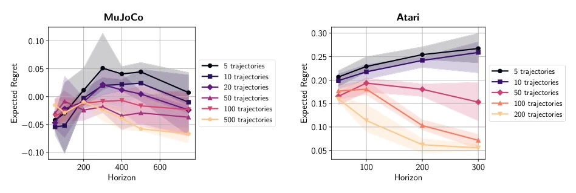
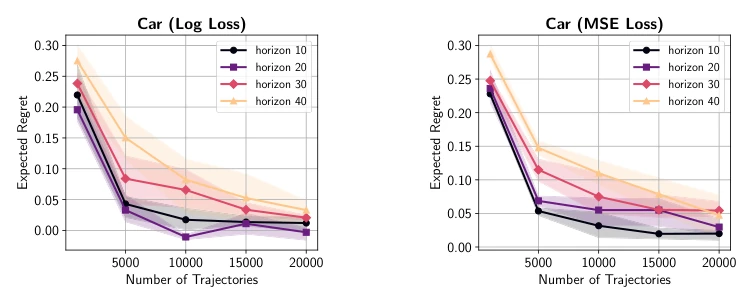
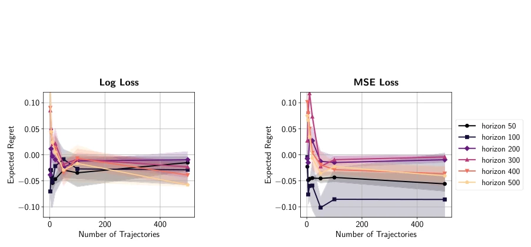
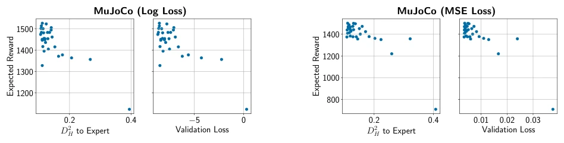

<!DOCTYPE html><html lang="zh"><head><meta charset="utf-8">
<meta name="viewport" content="width=device-width,initial-scale=1">
<title>Is Behavior Cloning All You Need? Understanding Horizon in Imitation Learning</title><style>
body{font:16px/1.7 -apple-system,Segoe UI,Roboto,'Noto Sans CJK SC',sans-serif;
 max-width:860px;margin:0 auto;padding:32px 20px;color:#1a1a1a;background:#fafafa}
h1{font-size:24px;line-height:1.3} h2{font-size:19px;border-left:4px solid #6c8cff;
 padding-left:10px;margin-top:34px;color:#27408b}
.meta{color:#666;font-size:13px;margin-bottom:8px}
.meta a{color:#6c8cff;text-decoration:none;margin-right:10px}
figure{margin:16px 0;text-align:center}
figure img{max-width:100%;border:1px solid #e0e0e0;border-radius:6px;background:#fff}
figcaption{font-size:12px;color:#777;margin-top:6px}
.badge{background:#ffb454;color:#000;font-size:11px;font-weight:700;padding:2px 8px;border-radius:4px}
.back{font-size:13px}
.en{display:none}
.lang-en .zh{display:none}
.lang-en .en{display:revert}
.langbtn{position:fixed;top:12px;right:12px;background:#27408b;color:#fff;border:0;
 border-radius:6px;padding:6px 12px;cursor:pointer;font:inherit;z-index:10}
.catgrid{display:grid;grid-template-columns:repeat(auto-fill,minmax(155px,1fr));gap:10px;margin:12px 0}
.catblock{display:flex;flex-direction:column;align-items:center;justify-content:center;gap:8px;
 min-height:72px;padding:12px;background:#e3e7ef;border:2px solid #6c8cff;
 border-radius:10px;color:#1a2030;text-decoration:none;text-align:center;font-size:13px;font-weight:600;
 transition:background .15s}
.catblock:hover{background:#bcc4d6}
.catblock .cnt{color:#2f6bff;font-size:14px;font-weight:800}
</style></head><body>
<button class="langbtn" id="langbtn" onclick="toggleLang()">EN</button><script>function toggleLang(){var en=document.documentElement.classList.toggle('lang-en');try{localStorage.setItem('rd_lang',en?'en':'zh')}catch(e){}document.getElementById('langbtn').textContent=en?'中文':'EN'}(function(){try{if(localStorage.getItem('rd_lang')==='en')document.documentElement.classList.add('lang-en')}catch(e){}var b=document.getElementById('langbtn');if(b)b.textContent=document.documentElement.classList.contains('lang-en')?'中文':'EN'})();</script>
<p class="back"><a href="../index.html" onclick="if(history.length>1){history.back();return false}"><span class="zh">← 返回</span><span class="en">← Back</span></a></p>
<h1>Is Behavior Cloning All You Need? Understanding Horizon in Imitation Learning</h1>
<p class="meta">Dylan J. Foster, Adam Block, Dipendra Kumar Misra<br>
<a href="https://arxiv.org/abs/2407.15007">abs</a><a href="https://arxiv.org/pdf/2407.15007">pdf</a></p>
<h2><span class="zh">论文点评</span><span class="en">Review</span></h2><div class="zh">这篇论文试图用理论“打脸”在线模仿学习的优越性。作者证明在可设定（realizable）且参数共享（parameter sharing）的假设下，行为克隆（BC）用对数损失（Log Loss）就能达到线性甚至无界依赖的样本复杂度，打破了“离线 BC 必然二次依赖”的旧认知。但这理论太“娇贵”了，一旦专家策略随机或没有参数共享，二次依赖又回来了。实验部分在 MuJoCo 和 Atari 上验证了理论，但语言生成任务的结果有点“玄学”，复杂度增加导致 regret 上升。总的来说，这是一篇漂亮的理论文章，但离实际落地还有距离，毕竟现实世界哪有那么多完美的 realizability 假设？它提醒我们，理论上的“最优”往往依赖于强假设，而实践中的“次优”算法可能更鲁棒。</div><div class="en">This paper attempts to use theory to challenge the superiority of online imitation learning. The authors prove that under the assumptions of realizability and parameter sharing, Behavior Cloning (BC) utilizing Log Loss can achieve sample complexity with linear or even unbounded dependency, overturning the conventional belief that &#x27;offline BC necessarily exhibits quadratic dependency&#x27;. But this theory is too &#x27;fragile&#x27;; once the expert policy is stochastic or lacks parameter sharing, the quadratic dependency returns. The experimental section validates the theory on MuJoCo and Atari, but the results for the language generation task are somewhat &#x27;metaphysical&#x27;, as increased complexity leads to rising regret. Overall, this is an elegant theoretical paper, but it remains distant from practical deployment, given that the real world rarely offers such perfect realizability assumptions. It reminds us that theoretical &#x27;optimality&#x27; often relies on strong assumptions, while &#x27;suboptimal&#x27; algorithms in practice may be more robust.</div><h2><span class="zh">研究动机</span><span class="en">Motivation</span></h2><div class="zh">模仿学习（IL）中，离线 BC 被认为存在样本复杂度随 horizon 二次增长的问题（Ross and Bagnell, 2010），而在线 IL（如 Dagger）声称能改善为线性依赖（Ross et al., 2011）。这导致实践中在线方法更受推崇，尽管专家交互成本高。现有理论无法解释为何实践中离线 BC 往往表现良好，且未明确在线 IL 在一般策略类下的优势边界。本文旨在从学习理论角度重新审视这一差距，探究是否在线 IL 真的比离线 BC 更优，还是现有分析过于保守。特别是针对深度神经网络等通用策略类，现有界限是否过于宽松。</div><div class="en">In Imitation Learning (IL), offline BC is believed to have the problem of sample complexity growing quadratically with horizon (Ross and Bagnell, 2010), while online IL (such as Dagger) claims to improve it to linear dependency (Ross et al., 2011). This leads to online methods being more favored in practice, despite the high cost of expert interaction. Existing theories cannot explain why offline BC often performs well in practice, and do not clarify the advantage boundaries of online IL under general policy classes. This paper aims to re-examine this gap from the perspective of learning theory, exploring whether online IL is truly superior to offline BC, or if existing analyses are too conservative. Especially regarding general policy classes such as deep neural networks, whether existing bounds are too loose.</div><figure><figcaption>Figure 1: Suboptimality of a policy learned with log-loss behavior cloning (LogLossBC) as a function of the number of expert trajectories, for varying values of horizon H. In each environment, an imitator is trained according to LogLossBC and the regret with respect to the expert is reported, with reward normalized to be horizon-independent. (a) Continuous control with MuJoCo environment Walker2d-v4. (b) Discrete control with Atari environment BeamRiderNoFrameskip-v4. For both environments, we find that the regret is independent of horizon (or in the case of Atari, slightly improving with horizon), as predicted by our theoretical results. Full experimental details are provided in Section 5.</figcaption></figure><h2><span class="zh">方法</span><span class="en">Method</span></h2><div class="zh">核心方法是重新分析行为克隆（BC），特别是使用对数损失（LogLossBC）。整体流程是将 IL 问题归约到监督学习。创新点在于：1. 提出基于轨迹级（trajectory-level）的误差控制，利用平方 Hellinger 距离 $D_H^2$ 替代传统的总变差距离，从而避免误差放大。2. 针对确定性专家，证明在奖励归一化且策略类参数共享时，LogLossBC 的 regret 与 horizon 无关或线性相关（Theorem 2.1）。3. 针对随机专家，引入方差依赖项（variance-dependent），证明在 dense rewards 下二次依赖是紧的，除非满足 recoverability 条件。4. 通过信息论工具（change-of-measure）严格界定了在线与离线 IL 的界限，证明在 realizability 假设下在线无法普遍优于离线。5. 证明中使用了停止时间（stopping time）论证来处理随机专家的优势集中问题，确保 bound 的紧致性。</div><div class="en">The core method is to re-analyze Behavior Cloning (BC), specifically using Log Loss (LogLossBC). The overall process reduces the IL problem to supervised learning. The innovations lie in: 1. Proposing trajectory-level error control, utilizing squared Hellinger distance $D_H^2$ to replace the traditional total variation distance, thereby avoiding error amplification. 2. For deterministic experts, proving that when rewards are normalized and policy class parameters are shared, the regret of LogLossBC is independent of or linearly related to horizon (Theorem 2.1). 3. For stochastic experts, introducing a variance-dependent term, proving that under dense rewards, quadratic dependency is tight unless recoverability conditions are met. 4. Strictly bounding the limits of online and offline IL through information theory tools (change-of-measure), proving that online cannot universally outperform offline under realizability assumptions. 5. Stopping time arguments were used in the proof to handle the advantage concentration problem of stochastic experts, ensuring the tightness of the bound.</div><figure><figcaption>Figure 3: (a) Relationship between the number of expert trajectories and expected regret for the Dyck environment multiple choices of horizon H. The expert is trained to produce valid Dyck words of length H, and the imitator’s ability to generate a valid word is evaluated. We find that regret increases as a function of H. (b) Logarithm of the product of weight matrix norms for the expert policy network as a function of H, for Dyck and Car environments. The log-product-norm acts as a proxy for complexity for the class Π; we rescale such that log-product-norm at H = 10 is 1.0 for both domains. For Dyck, we find that as H increases, the complexity of Π required to represent the expert policy (as measured by the log-product-norm) also increases, explaining the increasing regret in (a). However</figcaption></figure><h2><span class="zh">实验</span><span class="en">Experiments</span></h2><div class="zh">实验在 MuJoCo (Walker2d-v4) 和 Atari (BeamRider) 连续/离散控制任务上进行，以及 Dyck 语言生成任务。基线对比了 LogLossBC 与 MSE Loss BC。指标为 Expected Regret。结果显示，LogLossBC 的 regret 随 horizon 增加基本不变或略有改善（Figure 1, 2），验证了理论预测的 horizon 独立性。相比之下，MSE Loss 表现较差。语言生成实验中，Dyck 任务 regret 随 H 增加，归因于策略类复杂度增加（Figure 3）。消融分析表明参数共享对降低复杂度至关重要。此外，Figure 6 验证了 Hellinger 距离与验证损失的高度相关性，表明其可作为 rollout reward 的良好代理指标。</div><div class="en">Experiments were conducted on MuJoCo (Walker2d-v4) and Atari (BeamRider) continuous/discrete control tasks, as well as the Dyck language generation task. Baselines compared LogLossBC with MSE Loss BC. The metric is Expected Regret. Results show that the regret of LogLossBC remains basically unchanged or slightly improves as horizon increases (Figure 1, 2), validating the horizon independence predicted by theory. In comparison, MSE Loss performs worse. In language generation experiments, Dyck task regret increases with H, attributed to increased policy class complexity (Figure 3). Ablation analysis indicates that parameter sharing is crucial for reducing complexity. Additionally, Figure 6 validates the high correlation between Hellinger distance and validation loss, indicating it can serve as a good proxy metric for rollout reward.</div><figure><figcaption>Figure 2: Dependence of expected regret on the horizon for multiple choices for the number of imita- tor trajectories n. (a) Continuous control environment Walker2d-v4. (b) Discrete Atari environment BeamriderNoFrameskip-v4. For both environments, increasing the horizon does not lead to a significant increase in regret, as predicted by our theory.</figcaption></figure>
<figure><figcaption>Figure 4: Dependence of expected regret on the number of expert trajectories for Car environment under varying values for horizon H for log-loss (a) and mean-squared loss (b). The expert policy network is trained on a set of 2×104 episodes generated by an optimal policy via behavior cloning. We use LogLossBC to train imitator policy for varying values of the horizon H and number of trajectories n. For both losses, we find that the expected regret goes down as the number of expert trajectories increases, but degrades slightly as a function of H.</figcaption></figure>
<figure><figcaption>Figure 5: Dependence of expected regret on the number of expert trajectories for continuous control environment Walker2d-v4 under varying choices for horizon H. (Left) Behavior cloning with logarithmic loss (LogLossBC); (Right) Behavior cloning with mean squared error (MSE) Loss. Both losses lead to similar performance for this environment, possibly due to Gaussian policy parameterization.</figcaption></figure>
<figure><figcaption>Figure 6: Evaluation of the quality of (i) Hellinger distance D2 H  Pπ⋆, Pbπ , and (ii) validation loss as a proxy for rollout reward. We plot Hellinger distance and validation loss against mean reward for a over a single training run for Walker2d environment with H = 500 and n = 500. (a) Results for LogLossBC, where the validation loss and Hellinger distance D2 H are highly correlated, and serve as good proxies for the expected reward of the policy. (b) Results for MSE loss, where the validation loss is less well correlated with the expected reward (note the cluster in the upper left hand corner), but the Hellinger distance D2 H remains a good proxy.</figcaption></figure>
</body></html>